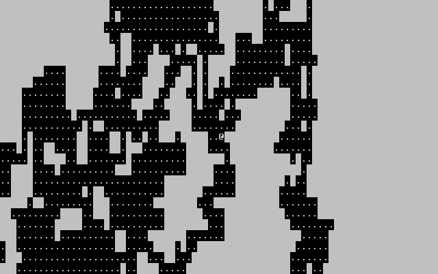
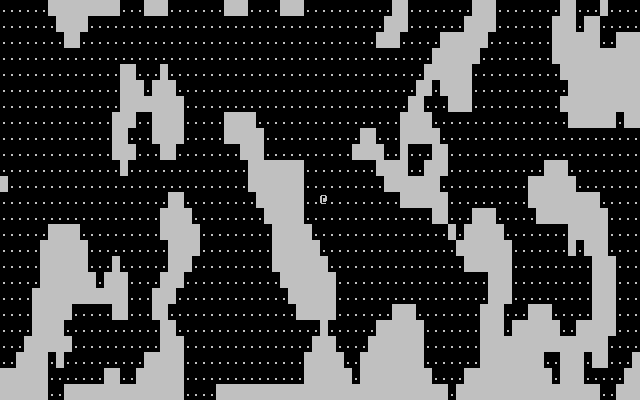

Last time, we created an empty map for the player to walk around in. This time, we'll be turning that empty rectangle into a cavelike area.
Since this was the first real followup problem, I decided to keep it simple. When we draw the player with mvaddch, we move the cursor to the player's position then draw their character in that space. When that happens, the cursor advances by one to the right, leaving it next to the player that we drew. To resolve this, we can simply call move() again:
18 actor_draw(actor); 19 move(10, 0); // Place the cursor at a specified location 20 move(actor->y, actor->x); // ...Or place the cursor on the player
If you've never made any sort of moving viewport, it can seem like a daunting task. Thankfully, making a camera is easier than it seems at first. As I hinted at last time, the trick to creating a camera is moving the world to match the player's location, rather than moving some invisible "thing" to the player. For my implementation, I stuck with the assumption that an actor (such as the player) is always the center of attention:
141 void map_draw(map* m, actor* focus) { 142 // Get the offset needed to put the focus in the center of the view 143 int offset_y = focus->y - (VIEW_LINES / 2); 144 int offset_x = focus->x - (VIEW_COLS / 2); 145 146 // Adjust the offset so that small maps are centered 147 if(m->lines <= VIEW_LINES) { 148 offset_y = -(VIEW_LINES - m->lines) / 2; 149 } 150 if(m->columns <= VIEW_COLS) { 151 offset_x = -(VIEW_COLS - m->columns) / 2; 152 } 153 154 // Draw with the calculated offset 155 for(int i = (offset_y > 0 ? offset_y : 0); i < (offset_y + VIEW_LINES <= m->lines ? offset_y + VIEW_LINES : m->lines); ++i) { 156 for(int j = (offset_x > 0 ? offset_x : 0); j < (offset_x + VIEW_COLS <= m->columns ? offset_x + VIEW_COLS : m->columns); ++j) { 157 mvaddch(i - offset_y, j - offset_x, m->data[i][j].character); 158 } 159 } 160 }
One thing to note about the code above is that it locks the map to the center if it's smaller than the viewport. This makes for a very nice camera that plays well with both big and small maps. In addition to the map, the actors must also be offset by the camera in the same manner as shown above.
If we want levels that aren't just empty spaces, we'll need to add solid tiles. Depending on your game, there could be many different types of 'solid' tiles: water, pits, walls, doors, and more. For now, we'll just add a bool to our tile struct to decide whether or not an actor can move there.
At this point, we can (theoretically) create a non-blank level. That means it's time to procedurally generate our first random level! As the title of this part implies, we'll be looking at a couple simple-but-effective ways of making cave-like maps. Before we start, though, let's consider design.
When designing a level for your roguelike, it's important to know what the world you're building should be like. To date, I've made 3 roguelikes for past 7DRL entries, and each one of them uses different algorithms to make their worlds.
Something Something Office Rampage takes place in an office building with a secret underground laboratory. The upper floors, being an office, were simple collections of boxy rooms and corridors. I was very inexperienced when I made the game, so these levels aren't very well put-together. Below these floors is the lobby, a wide-open floor. This is followed up by sewers and the aforementioned laboratory. Both of these sets of floors use a simple maze-building algorithm to give them a twisting, confusing feel. The two sets are still different, however. The sewers are a normal labyrinth, but for the labs I scaled the maze up and made each "space" a 3x3 room.
Contrasting these last two floor sets is particularly important, because even using the same algorithm I was able to make two relatively different levels with only small tweaks. As you start building algorithms for making levels, you'll find that even playing with details can often create large differences.
To the West is a game about travelling... to the west. This means that I needed to create a number of biomes that the player would pass through on their journey. To achieve this, I created a simple XML-based format for creating biomes.
The actual generation algorithm is quite simple. The developer specifies a range of sizes and a relative difficulty (distance) for the biome. Then, they specify the tiles and their rarity. The rest is handled by simple calls to rand().
Due to a lack of time and motivation, Growgue's levels were pretty boring. Since I was making a game that was (mostly) in a cave, I just used the drunkard's walk (which I explain below) to make the levels.
As you can see, the setting and feel of a game are very important to consider when preparing the game's level generators. Throughout this series, I'll be trying to showcase different tricks and algorithms, but at the end of the day it's up to you to determine what your game needs.
Let's start with the first, and arguably the simplest, algorithm at our disposal: The Drunkard's Walk. This simple algorithm can be described as:
Step in a random direction.The result is a messy, organic-looking map:
Here's the code I used to create the level above:
20 void map_generate_drunkards(map* m, actor* a) { 21 uint16_t y = a->y; // We want to start at the player's location, 22 uint16_t x = a->x; // in order to guarantee that they spawn in the map. 23 uint16_t count = 0; 24 25 // You can change the number that we multiply to adjust how much open space 26 // the map has. 27 while(count < m->lines * m->columns * 0.2) { 28 if(m->data[y][x].solid) { 29 m->data[y][x].solid = FALSE; 30 m->data[y][x].character = '.'; 31 32 count++; 33 } 34 35 // Move in a random direction, avoiding the edges 36 if(!(rand() % 2)) { 37 if(y > 1 && (!(rand() % 2) || y + 1 >= m->lines - 2)) 38 y--; 39 else 40 y++; 41 } else { 42 if(x > 1 && (!(rand() % 2) || x + 1 >= m->columns - 2)) 43 x--; 44 else 45 x++; 46 } 47 } 48 }
Next, here's another method of making caves. This one is much more complex, but can create some nice caverns and works with other algorithms as well. Rather than moving a cursor, we can generate caves using cellular automata. For the uninitiated, cellular automata are a fairly interesting branch of computation. For our purposes, though, I'll provide a simple summary: "Cellular Automata are a collection (usually a grid) of tiles, each with some kind of discrete state. The states of tiles change over the course of cycles (iterations) based on the states of their neighbors."
In the case of this algorithm, we use cellular automaton with similar rules to Conway's Game of Life. Our cellular automaton will mark non-solid tiles as solid if enough adjacent tiles are already solid, and vice-versa. At the start of each cycle, we also mark a random number of non-solid tiles as solid, based on a given percentage. This has the effect of eroding away passable areas and smoothing them out at the same time:
49 void map_generate_erode(map* m, actor* a) { 50 int passcount = 3; // How many passes to perform 51 int ratio = 45; // Percentage of solid tiles to shoot for each pass 52 int min_neighbors = 5; // How many neighbors are needed to stay non-solid 53 int min_neighbors_non = 3; // How many neighbors are needed to stay solid 54 55 // Empty the map, but keep the edges solid 56 for(int i = 0; i < m->lines; ++i) { 57 for(int j = 0; j < m->columns; ++j) { 58 if(i == 0 || i == m->lines - 1 || j == 0 || j == m->columns - 1) { 59 m->data[i][j].solid = TRUE; 60 m->data[i][j].character = 219; 61 } else { 62 m->data[i][j].solid = FALSE; 63 m->data[i][j].character = '.'; 64 } 65 } 66 } 67 68 // Passes 69 for(int pass = 0; pass < passcount; ++pass) { 70 // Fill empty spaces with some percentage (ratio) of solid tiles 71 for(int i = 1; i < m->lines - 1; ++i) { 72 for(int j = 1; j < m->columns - 1; ++j) { 73 if(!m->data[i][j].solid) { 74 m->data[i][j].solid = rand() % 100 < ratio; 75 m->data[i][j].character = m->data[i][j].solid ? 219 : '.'; 76 } 77 } 78 } 79 80 // Run the Cellular Automaton 81 for(int i = 1; i < m->lines - 1; ++i) { 82 for(int j = 1; j < m->columns - 1; ++j) { 83 if(m->data[i][j].solid) { 84 // Get the number of similar neighbors 85 int neighbors = 0; 86 for(int k = -1; k < 2; ++k) { 87 for(int l = -1; l < 2; ++l) { 88 if(m->data[i + k][j + l].solid) 89 neighbors++; 90 } 91 } 92 93 m->data[i][j].solid = neighbors >= min_neighbors; 94 m->data[i][j].character = m->data[i][j].solid ? 219 : '.'; 95 } else { 96 // Get the number of similar neighbors 97 int neighbors = 0; 98 for(int k = -1; k < 2; ++k) { 99 for(int l = -1; l < 2; ++l) { 100 if(!m->data[i + k][j + l].solid) 101 neighbors++; 102 } 103 } 104 105 m->data[i][j].solid = neighbors < min_neighbors_non; 106 m->data[i][j].character = m->data[i][j].solid ? 219 : '.'; 107 } 108 } 109 } 110 } 111 112 // Second cleanup pass 113 for(int i = 1; i < m->lines - 1; ++i) { 114 for(int j = 1; j < m->columns - 1; ++j) { 115 if(m->data[i][j].solid) { 116 int neighbors = 0; 117 for(int k = -1; k < 2; ++k) { 118 for(int l = -1; l < 2; ++l) { 119 if(m->data[i + k][j + l].solid) 120 neighbors++; 121 } 122 } 123 124 m->data[i][j].solid = neighbors >= min_neighbors; 125 m->data[i][j].character = m->data[i][j].solid ? 219 : '.'; 126 } else { 127 int neighbors = 0; 128 for(int k = -1; k < 2; ++k) { 129 for(int l = -1; l < 2; ++l) { 130 if(!m->data[i + k][j + l].solid) 131 neighbors++; 132 } 133 } 134 135 m->data[i][j].solid = neighbors < min_neighbors_non; 136 m->data[i][j].character = m->data[i][j].solid ? 219 : '.'; 137 } 138 } 139 } 140 }
I hope this segment has opened your eyes a bit with regards to procedural generation. The notion of letting the computer create content may seem frighteningly complex, but in reality there are plenty of simple algorithms that can produce great results. It's important to remember, however, that this tutorial series is meant as a starting point for you to build your own game. Rather than simply taking the algorithms and code that I show here directly, it's important to tweak and modify them to properly suit your needs. Nothing's stopping you from adding new steps to an algorithm, modifying the results, or even combining several algorithms at once. In the next segment, I'll be applying this advice to create a more polished level generator.
To download the code as of this part, click here.